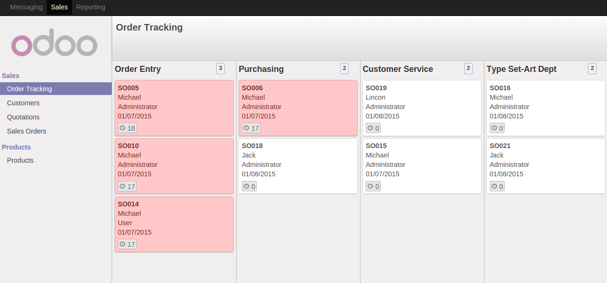

<section class="oe_container">
    <div class="oe_row oe_spaced">
        <h2 class="oe_slogan">Sales Order Tracking</h2>
        <div class="oe_span6">
            <div class="oe_demo oe_picture oe_screenshot">
                  
            </div>
        </div>
        <div class="oe_span6">
            <p class='oe_mt32'>
1962 - When a sales order is created, tracking for that sales order is automatically created. Tracking will have different stages based on which it shows progress of that particular sales order. Tracking turns to Red if duration reaches it's 'Max Time Limit' for that particular stage.
<br/>E.g. 'Purchasing' stage has Max Limit of 10 Hrs. Duration of Sales Order SO006 is 17 Hrs in 'Purchasing' stage so it will turn to Red. 
            </p>
            <div class="oe_centeralign oe_websiteonly">
                <a href="http://www.openerp.com/start?app=sale" class="oe_button oe_big oe_tacky">Start your <span class="oe_emph">free</span> trial</a>
            </div>
        </div>
    </div>
</section>